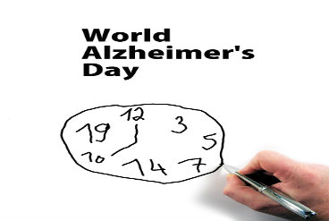
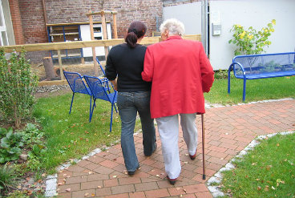

This is a site dedicated to discussing different aspects of dementia, so people can gain more knowledge about the illness.
Mind
It is important to always remeber the feelings of your loved one with dementia.
They will become more frustrated as their dementia progresses. They will be confused,
frustrated, and angry, and we should do our best to help them, no matter what their state
of mind.

Awareness
World Alzheimer's Day is September 21st. Alzheimer's organizations around the world put even more effort into raising awareness about Alzheimer's and dementia on this day. Click below to find out more about World Alzheimer's Day.

Family
The most important thing to do if you have a loved one with dementia, is to just love them. They do need care, and more people do need to know about dementia, but we must remeber what our loved ones need, and that is just for us to love them and care for them the best that we can.
This is the first post in a series of posts related to different demtnia related topics.
The day she stopped saying my name is the day I knew she forgot me. As a college student, I have only ever heard dementia mentioned a few times, however, I have never known what dementia truly means. I did not know any signs or symptoms of the brain killing disease; however, I would have benefited greatly if I had any dementia-related knowledge. Dementia introduced itself to me when...
I think it is important to get as much helpful information as possible when learning about something new, or in this case, dementia. Not only am I using helpful websites to get my information, but I am also getting answers from medical professionals. For my video, I was able to interview Dr. Martha Anderson, to discuss some of the most important aspects of dementia and dementia care. Dr. Martha Anderson is also involved in important research regarding both dementia patients and caregivers. I have a link to her research video under the description of my video on my YouTube channel if you want to learn more about her research. By interviewing Dr. Martha Anderson, I gained a great deal of knowledge about dementia. I learned many new facts you can’t find on the internet. If you are learning about dementia as well, the internet is a very helpful tool, but it is also vital you talk to medical professionals so you can learn about all aspects of dementia. Doctors can discuss private matters with you and reassure you if you are still doubtful of anything you find. I was able to interview two people who directly involve themselves with dementia. In addition to Dr. Martha Anderson, I also interviewed Dr. Karen Roberto (you can listen to the podcast on this website of the interview with Dr. Roberto.) Dr. Karen Roberto is part of the Alzheimer’s Association, and they are a very good resources when learning about dementia and Alzheimer’s. I did not know either Dr. Anderson or Dr. Roberto, but I found they actually worked on research together. I liked hearing their different, but similar views about dementia, and I hope you will find their answers to my questions informative and helpful.
Dedication
I have devoted this website to learning about dementia, but the real inspiration behind my passion is my great-grandmother. She was a hard-working, passionate, and caring woman. She worked for everything she had, and wouldn't hesitate to help anyone in need. She ended up having dementia, which is why I have dedicated this webstite to her. I want to make sure people know the truth about dementia, especially if they end up becoming diagnosed like my great-grandmother. Dementia is by no means an easy topic to discuss, but everyone needs to know the truth.
Could Your Loved One Have Dementia?
I am not a doctor, and I’m not diagnosing anyone. I have listed different Dementia's symptoms, so if you worry your loved one has Dementia, you can talk to a doctor and get a real diagnosis. I listed symptoms and their possible Dementia types, so you can more easily identify Dementia. When figuring out which Dementia your loved one may have...
“Mommy and Daddy I need you!”
We have all needed our parents. Our parents take care of us even after we can take care of ourselves; but we do not think about the possibility we may have to one day take care of them. I have not yet had to take care of my parents, but I had to watch my grandfather care for his mother who had a bad case of dementia. He had a difficult job, but he took care of her well. I have just recently learned about care taking, and I know how difficult it is; however, I must prepare for the future of my parents in case they become diagnosed with dementia...
Everyone’s story has a beginning and an end. How well your ending goes depends on the steps you take throughout your story. You and your loved one should prepare for the end immediately once the doctor diagnoses them with dementia. Most people would rather not think about their story’s end, but you and your loved one can have a much smoother transition when their dementia progresses if you are prepared. Your loved one needs to decide what they want later in life...
A very good resource I have been using to help my journey with learning about dementia is the Alzheimer's Association. I was able to interview Dr. Karen Roberto, a professor at Virginia Tech, who is also a part of the Alzheimer's Association. Dr. Roberto was able to tell me more about what the Alzheimer's association does to help raise awareness for dementia, as well as answer some very important questions about dementia.